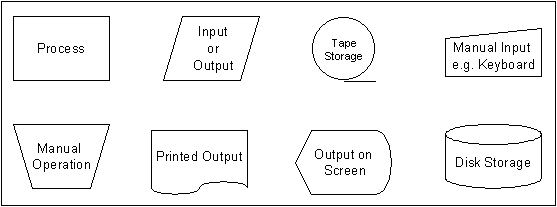
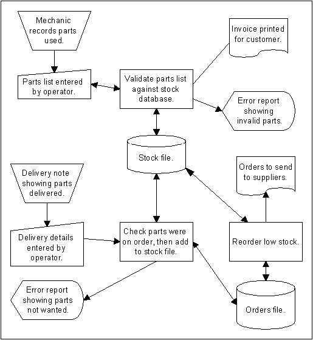

System Flow Charts |
|
Flowcharts describe in detail how a process will be carried out, but during the development of an information system it is useful to be able to produce a more general description of how a system will work. A system flowchart is a physical design tool that shows in general terms the operations that will be performed on information in an information system. The arrows on a system flowchart show the direction that data will flow in around the system rather than the order in which the operations will be carried out. Many more are used on a system flowchart than on a normal flowchart. These are the symbols that may be used : 
|
EXAMPLE A car repair garage uses a computer system to produce invoices and keep track of the parts it has in stock. The system uses two files :
When a repair is completed the mechanic records the parts that were used on a form. These parts are then entered into the computer by an operator. The list of parts that is entered is checked against the stock list to reduce the likelihood of the operator making a mistake. If the operator enters the name of a part that does not exist then an error report is displayed. When the parts list has been entered the cost of the parts is looked up in the stock file and an invoice (bill) is printed for the customer. Every night the computer system checks the stock file. A report is printed to indicate which parts need to be ordered from the garage's suppliers. Details of any orders are placed in the orders file. When a delivery of new parts is made to the garage the person making the delivery gives the garage a delivery note. The delivery note contains a list of the parts that have been delivered. The list of new parts is entered into the computer by an operator. If any parts have been delivered that were not ordered then an error report is printed. When an order is delivered the information about the order is removed from the orders file and the stock file is updated. The structure of this system can be shown using the following system flowchart :  |
Thanks to P. Meakin at http://www.hollyfield.kingston.sch.uk/gcseit/GCSE/algoflow.htm
for some great information |
Back to the IT Lecture Notes index
Back to the last page you visited
Created 21 Oct 2009
Last changed: February 12, 2013 12:59 PM
VCE IT Lecture notes © Mark Kelly 2001-